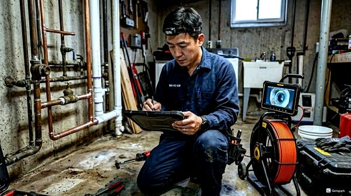
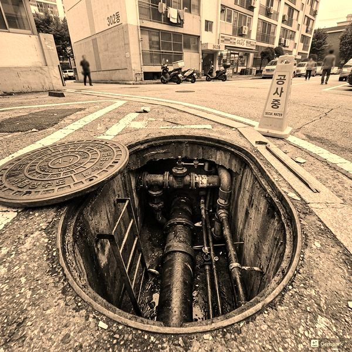
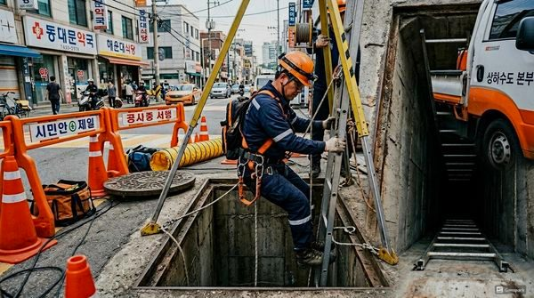

아파트 배수관 공동 관리 - 관리비로 해결하는 배관 문제
2026년 4월 12일 | 제우스시설관리
아파트 배관 문제는 개인의 전유부와 공용부의 경계가 모호하여 비용 분담 문제가 자주 발생합니다. 특히 수직 배관(스택)은 공용 시설이므로 관리비로 처리해야 하지만, 많은 입주민이 이를 모르고 개인 비용을 부담합니다.

아파트 배관의 전유부와 공용부 구분은 다음과 같습니다. 세대 내부 수평 배관은 전유부(개인 부담), 층간 수직 배관(스택)은 공용부(관리비 부담)입니다. 벽 속 매립 배관도 위치에 따라 다르므로, 문제 발생 시 관리사무소에 먼저 문의하세요.
공용 배관 문제가 의심되면 관리사무소에 접수하세요. 입주자 대표회의 의결을 거쳐 관리비에서 수리비를 집행할 수 있습니다. 제우스시설관리는 아파트 단지 전체의 배관 정기 점검 서비스를 제공하여, 관리비를 효율적으로 사용할 수 있도록 돕습니다.

아파트 전체 배관 세척은 2~3년에 1회 시행하는 것이 좋습니다. 고압세척기로 공용 배관의 기름때와 이물질을 제거하면 역류와 악취를 예방할 수 있습니다. 제우스시설관리는 관로탐지기와 내시경 카메라로 문제 구간을 사전에 파악하여 효율적으로 작업합니다.

아파트 배관 문제로 고민이시면 관리사무소를 통해 문의하세요. 제우스시설관리는 단지별 맞춤 견적을 제공합니다. 개별 세대 긴급 출동도 28분 내 가능합니다. 전화: 010-4406-1788